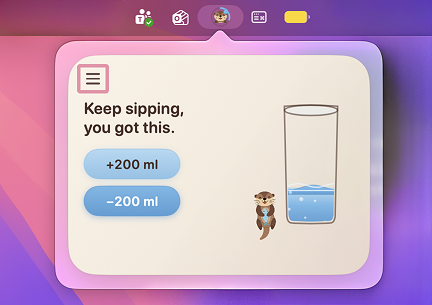
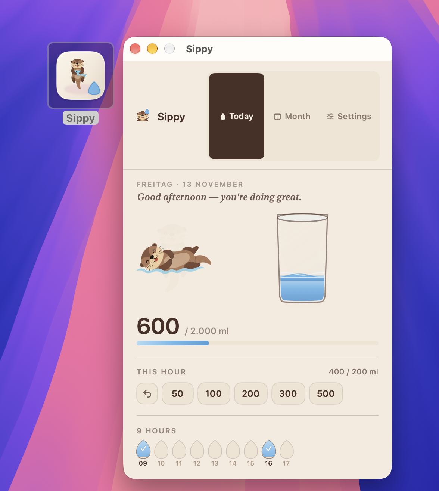

Hourly Reminders
Context-aware notifications appear quietly at the start of every hour, helping you stay on track without interrupting your focus. You can snooze a reminder or log a glass of water with a single click, directly from the notification.
A native macOS menu bar app that runs quietly in the background and gently reminds you to drink water throughout the day. It features hourly reminders, a friendly otter mascot, and a satisfying daily dashboard.
Stay hydrated, stay happy. ← Back to Work at DHBWDrinking enough water every day sounds simple, but it's surprisingly easy to forget when you're deeply focused. Most hydration apps are either too complex, too intrusive, or feel like another chore. Sippy takes a different approach: a lightweight menu bar app that never interrupts your workflow but gently reminds you to take a sip.
The idea was to create a truly native macOS experience, without Electron or web wrappers, that feels right at home on the desktop. Every hourly reminder and every click on the menu bar icon opens a clean popover showing your hydration progress for the day. Accompanying you throughout the experience is a little otter mascot whose mood changes depending on how well hydrated you are: sleepy when you've forgotten to drink, cheerful when you're on track, and absolutely delighted when you reach your daily goal.
Context-aware notifications appear quietly at the start of every hour, helping you stay on track without interrupting your focus. You can snooze a reminder or log a glass of water with a single click, directly from the notification.
The popover features an animated water glass that gradually fills up throughout the day, a clean progress bar showing how close you are to your daily goal, and quick-add buttons ranging from 50 ml to 500 ml. Just one tap and you're back to work.
A calendar grid provides a clear overview of the entire month. Each day displays a small circular progress indicator, shown in green when you reach your goal, blue when you come close, and empty when you miss it entirely.
Five different moods, gentle breathing animations, and occasional blinks bring
the otter to life. The mascot is created entirely with SwiftUI
Shape and Canvas, without relying on any external graphics.


The Sippy otter mascot is the emotional heart of the brand. Five distinct moods make
it feel alive, ranging from sleepy when you've forgotten to drink to delighted when
you reach your daily goal. It is entirely vector-based and drawn using SwiftUI
Shape and Canvas, with no need for external assets.
The color system combines a calming water blue with soft dusty pink and warm beige tones, creating a balance between trust and playfulness. The result is an interface that feels cosy and inviting rather than clinical.
Sippy is a solo project, which means I designed and built every part of it myself. What started as a personal challenge of forgetting to drink water during focused work evolved into a complete product experience. I took it from the initial problem definition and branding all the way to a fully functional macOS app.
The project showed that a little personality, such as a sleepy otter or a cheerful animation, can transform an ordinary daily habit into something you genuinely look forward to.
Interaction flow, information architecture, and the full popover experience.
Every screen, the color palette, typography, and the mascot's five mood states.
Menu-bar integration, notification scheduling, and local-first data persistence.
What I take away from this project.
Sippy taught me that the best personal tools are the ones you genuinely enjoy using. Building it from start to finish, from the first sketch to a polished app, showed me how UX thinking, visual design, and technical craftsmanship come together when one person is responsible for every layer.
Most importantly, the project showed me that a little personality, such as a sleepy otter or a cheerful animation, can transform an ordinary daily habit into something genuinely delightful. This insight now guides every design decision I make.